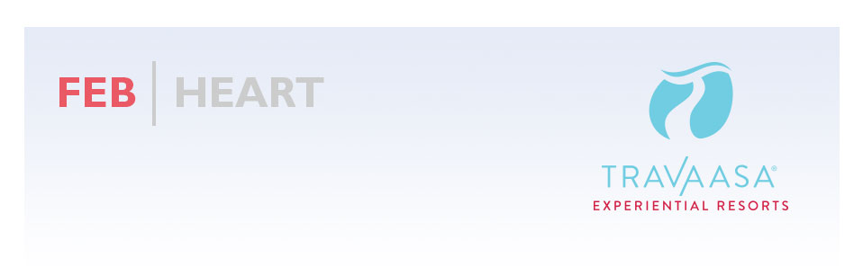
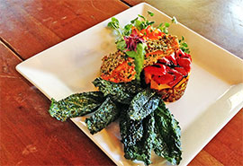
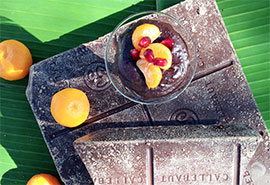

Polar vortexes. Super Bowl parties. Stock market dives. Life is filled with urgent distractions. But for one day a year, greeting card companies have convinced us that we need to focus on the one we love. And at Travaasa, we’ve stretched it out for the entire month.
February is Heart Month at Travaasa Experiential Resorts. At Travaasa Hana, try the Lokelani Valentines Ritual, a gentle rose exfoliating scrub followed by a massage and rose bath. In Austin, Chef Ben is whipping up aphrodisiacs again—try his fig and chocolate mousse with a nice glass of port, and you’re sure to feel the rush of a racing pulse.
Healthy food, exercise, exhilarating adventure, beautiful surroundings—that’s the recipe for romance. Come experience it with us.
THIS MONTH |
|
February is American Heart Health Month, a nationwide effort dedicated to empowering people to make heart-healthy choices and fight back against heart disease. Here at Travaasa, we are strong supporters of healthy hearts—both physically and emotionally. Take these three reminders to heart, and incorporate them into your daily routine. more |
|
Treat your sweetheart (or yourself!) to a deliciously indulgent spa treatment this Valentine’s Day. The Month of Love Chocolate Scrub and Massage at Travaasa Austin is a chocolate temptation without the calories! If you’re at Travaasa Hana, enjoy the Lokelani Valentines Ritual, a gentle rose exfoliating scrub followed by a massage and rose bath. Leave each treatment with a special Valentine’s Day treat. Both treatments are available all month long! more |
|  |
The culinary team at Travaasa is dedicated to creating unique, healthy dishes year round, but especially during Heart Month. Fish is packed with omega-3 fatty acids, which are ideal for the heart as they help lower blood pressure. Quinoa is extremely nutritious and contains high levels of antioxidants. Chef Marko combined these two superfoods into one delicious entree for heart-healthy bursts of flavor. more |
|  |
Make your sweetie something sweet this Valentine’s Day and discover the power of Chef Ben’s figs and chocolate mousse. Did we mention this dessert is an aphrodisiac? more |
“Wow. My experience at Travaasa in January 2014 blew me away. From the moment we pulled up to the exterior gate and spoke to the front desk staff until we checked out, we were treated with the utmost genuine kindness and friendliness by everyone. It seems clear that this is a great place to work, as every single person with whom I interacted appeared to be happy and enjoying their work. The onsite restaurant is under renovation, but the service was excellent and the food was still healthy and great-tasting. The spa is beautifully appointed but welcoming, and did not ever feel crowded even though there were a lot of people on property on the Saturday we were there. All the spa treatments I had were fabulous, especially the Watsu treatment, which I highly, highly recommend. There were a ton of fun activities on tap, and beautiful hiking trails, a garden and a labyrinth to explore. Not only do I plan to return to this location, but I hope to stay at Travaasa Hana on Maui on my next trip to Hawaii.” - Jennifer B. "Fabulous getaway in Austin" |
ON THE HORIZON
March is Go Month
With the temperatures starting to warm, we want to inspire you to get out and go during the month of March at Travaasa. Explore the beautiful Austin Hill Country on our cross-country mountain bike trails. Escape into nature on a guided horseback ride. Or enjoy a yoga class with an oceanfront view in Hana. Don’t forget our Food Truck will be at SXSW if you’re in Austin, too!
April is Grow Month
With spring comes all the things we love most about warmer weather and longer days. In April we’re looking forward to The Travaasa Farm buzzing with activity once again, as Farmer Kim plants the spring crop. Join us for chicken keeping classes and delicious farm-to-table meals. We have a few special celebrations in the works as well!
|
|